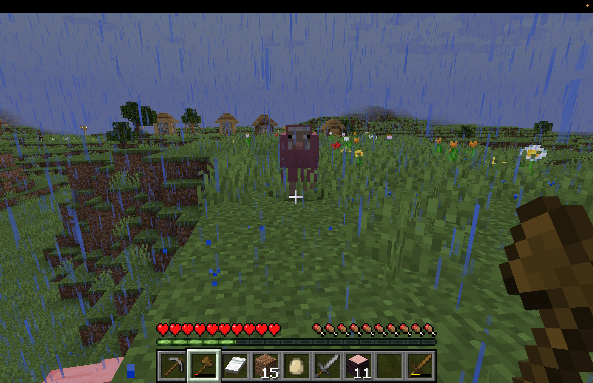

pink sheep
A screenshot of a pink sheep from when my friend and I had started a realm in Minecraft. We are both busy bees and have the realm paused for now but trust that I yearn to play. Pink Sheep in the game have a 0.164% chance of spawning naturally. Makes me think that I must be meant to exist there since this was within the first 15 minutes of us starting the world.
 ← back to junk drawer